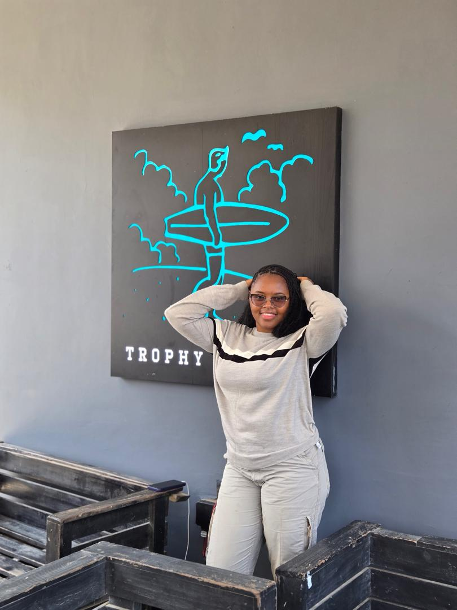

Halia Yayra Khayat | WDD 130
Halia is a vibrant and beautiful lady in her early 20s that has a driven passion for success. She enjoys keeping herself busy by attending classes and frequently studying materials that will be of benefit in her life like motivational books and educational content. Her dream is to become one of the biggest software engineers in Ghana, Africa, and beyond. In her leisure time, she likes to hang out to explore scenery, she enjoys playing games and also talking to people she loves. Halia is a really interesting person and anyone that gets to know her loves to be her friend.